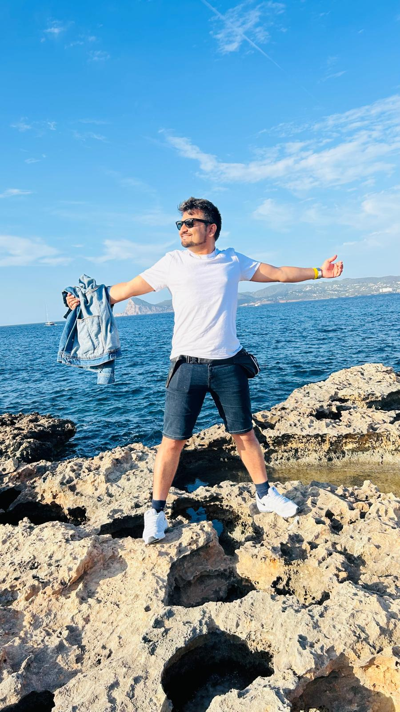
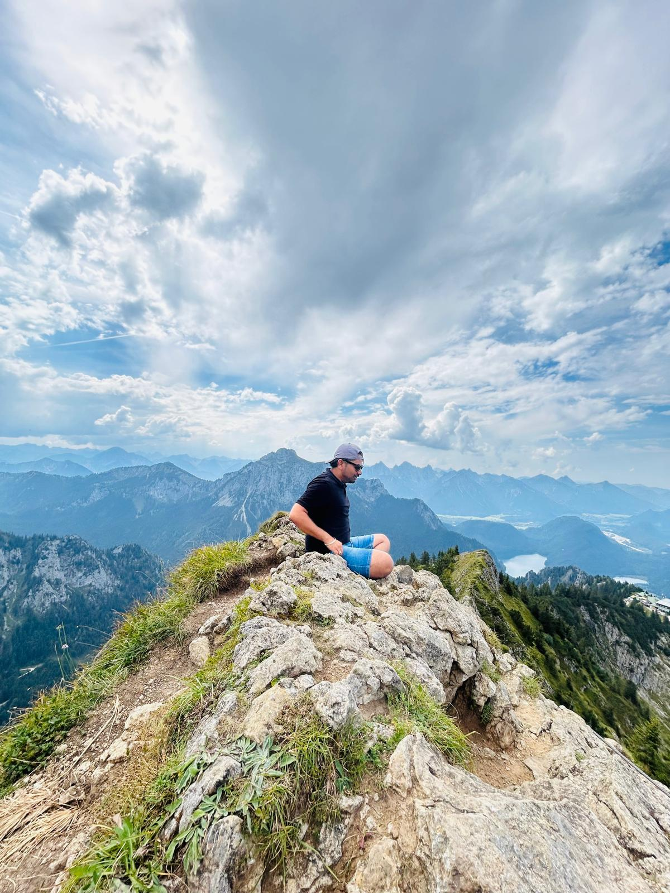

Data & AI Candidate
Analytics Engineer & Data Platform Owner at a Lufthansa Aviation Training, building governed Databricks lakehouse platforms — now moving into senior or leadership roles in Data & AI across the EU markets.

About
I completed my Master's in Data Science and International Project Management at a University of Applied Sciences in Berlin. That's where my journey with data truly began. Since then, I've had the opportunity to work in different roles across the data and business landscape, including Business Analyst, Customer Success Analyst, Data Analyst, and Analytics Engineer. Each role has given me a different perspective on how data can create value.
What I particularly love about working with data is that it sits at the intersection of business and technology. Many people think working with data is purely a technical role, but I see it as a much richer combination of both. You're not just solving technical tickets, building pipelines, or creating dashboards. You're trying to understand why something matters, what the business is trying to achieve, and how data can help solve real-world problems. That combination of analytical thinking, technical problem-solving, and business understanding is what I enjoy most about working with data.
With the rapid growth of AI, I believe the definition of "data" is also expanding. It's no longer just about structured data sitting neatly in tables and databases. Unstructured data, metadata, documents, conversations, images, and other forms of information will become increasingly important. The ability to connect, understand, govern, and make sense of all these different forms of data will play a key role in how organizations build and use AI.
Off the clock
Standing in front of those vast, majestic peaks makes me feel calm, humble, and wonderfully small.

You can't force the process; you just have to be patient, stay present, and let everything come together at its own pace.